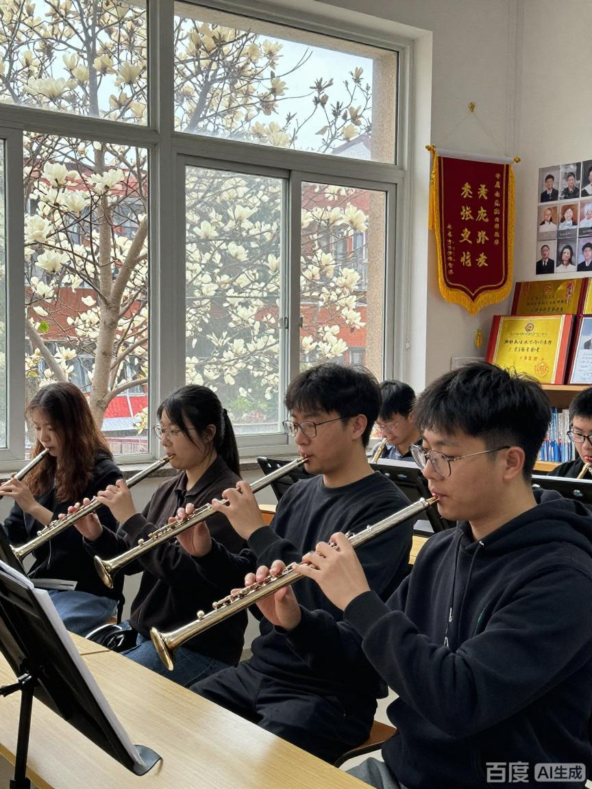

FLUTE CLUB · SINCE 2011
笛声起处，春山可望
2026 年春季招新 | 等你来吹响第一支长笛
提示：点击页面左上角的按钮即可播放背景音乐《笛韵春声》
长笛社成立于 2011 年秋天，是学校里成立较早的器乐类学生社团之一，现由艺术学院管乐教研室担任指导教师，在册社员八十六人，来自文学院、理学院、工学院、医学院等十多个院系。社团以长笛为主要载体，兼及短笛、中音长笛与竖笛，日常围绕“教、练、演”三条线展开：教学部负责从零起步的基础课程，演出部负责曲目编排与排练，宣传部与乐务部则把一场音乐会从头到尾的琐事一件件落实到人。
长笛是木管家族中历史最悠久的成员之一。现代长笛由笛头、笛身、笛尾三节插接而成，常见材质为白铜镀银或纯银，笛身侧面排布着十余个按键与若干联动杆。它不依赖簧片，而是靠气流在吹口边缘被“切开”而发声，因此音色明亮通透、富有光泽，常被称作管弦乐队里的“花腔女高音”。长笛的音域接近三个八度：低音区温润而略带沙沙的气声，中音区清澈平稳，高音区明亮而具有穿透力，可以直接盖过整个乐队的伴奏。比长笛高一个八度的短笛音色更尖锐、更轻巧，常用来点缀乐队最上方的那条高音线条；中音长笛则低一个纯四度，音色柔和，适合在重奏中担任内声部。
社团的宗旨说起来很简单：让每一个愿意为一段旋律花时间的人，都能在这里找到自己的位置。我们不设入社考核，不排名，也不做与音乐无关的打卡；零基础的同学会由老社员一对一带，从怎么把笛头吹响、怎么让气息稳住开始，一个音一个音地往前挪。每一届新社员里，都有将近一半的人在第一次见面会之前从未碰过长笛，这在我们看来并不是问题，而是常态。
社团的组织并不复杂。社长为总负责，两名副社长分别分管教学与演出；下设教学部、演出部、宣传部、乐务部四个部门。教学部负责零基础班与进阶班的课程设计、教材整理和一对一分组；演出部负责曲目选择、排练计划、走台与演出流程；宣传部负责海报、公众号、影像记录与对外联络；乐务部负责乐器借用、谱务、场地申请与演出后勤。每学期初公开招募部门干事，任何社员都可以报名，我们更看重的是你愿意把哪一件小事做到底，而不是你原来会什么。
训练方面，社团每周有两次固定的集体活动：周三晚上是基础训练课，周六下午是合奏排练。此外还有自愿参加的“晨笛”晨练，每周二、周四早上七点在图书馆后的草坪上吹二十分钟长音，来的人不多，但坚持下来的同学，气息和音色通常在半个学期后就有明显的变化。每学期期末，社团会在大学生活动中心举办一次汇报演出，从曲目编排、节目串联到灯光和串词，全部由社员自己完成。
资源方面，社团备有练习笛十二支，新社员可以免费借用一学期，不必一入社就购买乐器；谱库目前收录中外曲目一百二十余首，从《小星星》《欢乐颂》这类入门曲，到《卡门间奏曲》《魔笛》选段、《渔舟唱晚》改编版这样的进阶曲目都能找到。社团与校交响乐团、管乐团保持长期合作，优秀社员可以经推荐参与乐团的排练与演出；每学期还会邀请校外职业演奏家开设一次大师课，讲气息、讲音色，也讲一个演奏者如何在舞台上安放自己。
这些年社团陆续拿过一些成绩：校园文化艺术节器乐组一等奖、“春之声”长笛专场音乐会连续举办九届、社区与敬老院公益演出二十余场，还有几次校外的市级比赛奖项。但社员们更愿意提起的，往往是另一些场面：夏天的排练厅里空调坏了，大家一边擦汗一边把《绿袖子》吹完；冬天的楼道里回声很长，一个高音吹准了，整栋楼都在响。
排练厅的黑板上一直写着一条规矩：先把手上的音吹干净，再谈音乐。合奏是一种倾听的训练，你要听见隔壁声部什么时候换气，才知道自己该在哪里进来。我们希望新社员在这里学到的，除了怎么把一首曲子吹下来，还有怎么在人群里安静地听、在需要的时候准确地出声。
本次招新不限年级、不限专业，也不要求自带乐器。如果你曾经在某个傍晚被一段长笛的声音留住过脚步，或者只是单纯地好奇“这根银色的管子凭什么能发出那样的声音”，都欢迎来坐一坐、听一听、试一试。报名方式见本页最后的“在线报名”，也可以直接在见面会现场填写。
本学期的活动围绕“见面—入门—合奏—登台”四步展开。第一步解决“认识彼此”和“认识乐器”，让新社员先摸到琴、吹出声；第二步把零基础的同学带上手，从口型、气息、音阶一点点往前推；第三步把大家放进同一个声部里练合奏，学会听别人；最后一步是走上舞台，把一学期的练习交给观众检验。所有集体活动的地点集中在艺术楼 A302 音乐教室与大学生活动中心，具体安排见下表。如遇学校统一安排需要调整时间或场地，会在社团群与公众号里第一时间通知。
| 长笛社 2026 年春季学期活动安排表 | |||
|---|---|---|---|
| 活动名称 | 活动时间 | 活动地点 | 负责人 |
| 新成员见面会 | 3 月第 2 周 周五 19:00 | 艺术楼 A302 音乐教室 | 林知远 |
| 长笛基础教学公开课 | 3 月第 3 周 周六 15:00 | 苏晚晴 | |
| “春声”长笛专场音乐会 | 4 月第 2 周 周日 19:30 | 大学生活动中心 音乐厅 | 陈慕 |
| 重奏小组排练 | 4 月至 6 月 每周三 19:00 | 艺术楼 A302 音乐教室 | 各声部长 |
| “笛声与落叶”户外音乐会 | 5 月第 1 周 周六 16:00 | 图书馆前 银杏道 | 宣传部 |
| 期末汇报演出 | 6 月第 1 周 周六 19:00 | 大学生活动中心 大礼堂 | 全体社员 |
| 备注：以上时间为暂定安排，具体日期以社团群通知为准； 参加演出类活动的同学，请至少出席本学期的四次合奏排练，演出服装由乐务部统一租借。 |
|||
上表只列出了有固定时间与场地的集体活动。除此之外，每周三晚的基础训练课向所有新社员开放，前四周是“零基础起步班”：第一周认识乐器，学会组装、清洁与日常保养；第二周练口型与长音，目标是让一个音稳定地响够八秒；第三周进入音阶与简单节奏，开始接触吐音与连音的区别；第四周就能吹下第一首完整的曲子，通常是《小星星》或《欢乐颂》。有基础的同学可以跟着进阶班走，直接从重奏曲目入手，比如《绿袖子》或《卡农》的长笛四重奏改编版。
每月最后一周的周五晚上还有一次“笛声沙龙”，主题由社员自己定：可以讲一位喜欢的演奏家，可以分析一首曲子的呼吸怎么安排，也可以只是把最近练不顺的乐句拿出来，请大家一起听一听问题出在哪里。沙龙不设主讲人，谁想说话谁就说，气氛比正式排练松散得多，但往往就是在这种场合，新人第一次开口讲音乐。
关于考勤，社团只做统计，不做惩罚。统计的目的是安排教室、准备谱子和确定合奏声部，缺席不会影响任何评价，也不会影响你在社团里的位置。但如果打算参加期末的汇报演出，还是希望至少能来四次合奏排练。合奏这件事，靠一个人事后补是补不回来的：什么时候换气、什么时候把音量收下来，都是在排练现场一次次对齐出来的。
下面这张照片拍摄于去年十一月的“笛声与落叶”户外音乐会，地点在图书馆前的银杏道。那天风有点大，谱子被吹翻了好几次，最后大家干脆把谱架转了个方向，背对着风继续吹。照片里前排是刚入社两个月的新社员，后排是已经带了三四届人的老社员；吹短笛的那位站在最右边，声音能穿过整条道。点击图片可以进入活动介绍页，看到这场音乐会的完整曲目单与现场记录。

照片里那把银色长笛是社团的公用练习笛，笛身的镀银已经磨掉了一小块，按键也有点松，但声音依然干净。每年都有新社员带着它去参加第一次合奏，然后在这把笛子上吹出自己人生中第一个完整的乐句。社团的公共乐器就是这样一件件旧下去的，而每一届人的指法都留在了上面。
下面嵌入的是社团的宣传短片，由宣传部用一张演出照片配上本学期排练的录音剪辑而成，时长十五秒，循环播放。第一次打开页面时不会自动播放，需要手动点击播放键，避免同时和背景音乐抢声音。
长笛社 2026 年春季宣传短片（mp4 格式，点击播放键观看）
更多的影像记录，包括学期音乐会的全场录像、排练花絮和大师课片段，都整理在社团的共享网盘里，加入社团后可以随时索取。如果你还在犹豫要不要来，不妨先看看这些画面里大家的样子：没有谁是“天生会吹”的，多数人第一次拿起长笛的时候，连一个音都吹不响，吹出来的是“呼呼”的风声。真正让人留下来的，是某一天突然吹出了一个干净的音，然后发现这件事是可以练出来的。
招新的时候，最常被问到的问题是：“我一点基础都没有，真的可以吗？”下面这四段故事都来自社团里的真实经历，人物作了化名，但那些笨拙的开头、突然开窍的瞬间和最后的舞台，都是真的。
周意是医学院大二的学生，来见面会那天，她在门口站了五分钟才推门进来，说自己“只是来看看”。那天晚上她没有报名，只是坐在最后一排，看别人吹。第二次她来了，带着一支刚在网上买的入门练习笛，说想试试。结果第一次拿起笛头，她把脸憋得通红，一个音也没吹出来，只听见“呼——”的一声空气声。
带她的老社员姓沈，只说了一句话：“先把笛头拿下来，单独吹笛头，别急着吹整支笛子。”于是接下来两周，周意每天晚上在宿舍楼下的空地上练十分钟笛头，目标只有一个：让声音稳定地响够四秒。第四天，她第一次吹出了“呜”的一声，很短，但真的是乐音。她给沈学长发消息，说“我好像吹出来了”。学长回了一句：“那就再练十次。”
三个月后的新年晚会上，周意吹完了《小步舞曲》。上台前她手心全是汗，笛子差点拿不稳，第一句进来的时候还错了一个音。但她没有停，一口气吹完了整首，台下有人鼓掌，她鞠躬的时候眼睛是红的。后来她跟新社员讲起这段经历，说最难忘的不是演出那天，而是某个普通的晚上，她在楼道里突然吹出一个干净的高音，“那一刻觉得整栋楼都在响”。
李慕是计算机学院的学生，高中时几乎没在众人面前说过话。他加入社团的理由很实际：想找一个不用说话也能待着的地方。头两个月，他每次排练都坐在最靠墙的位置，吹完自己那一行就低头看谱，中场休息时一个人去走廊站着。
转折发生在他被拉进重奏小组之后。四个人吹一首曲子，谁也不能只顾自己那行谱：第二声部要在第一声部换气的时候顶上去，第三声部要在主题回来之前把音量收下来。第一次合排，四个人错了六个地方，指导老师没有批评，只让大家把手上的谱子放下，先一起数拍子、一起呼吸。那天排练结束，李慕在群里发了一句“明天我能早点来吗”，这是他入社以来第一次主动说话。
学期末的“笛声沙龙”上，他讲了十分钟，讲的是自己怎么从“完全听不见别人”到“能听出来隔壁声部什么时候吸气”。他说：“我原来以为合奏就是各吹各的，后来发现是四个人一起呼吸。”现在的他依然不算健谈，但排练时会抬头看指挥，也会在别人吹错的时候小声提醒一句。他说社团给他最大的东西，是一种“可以慢慢地开口”的安心感。
2019 级的沈屿是社团里待得最久的人之一，从大一吹到研三，七年。他的琴房钥匙一直挂在书包侧袋上，钥匙扣上挂着一小段旧笛垫。毕业前最后一个晚上，他把排练厅的灯关掉之前，在谱架上留了一沓整理好的谱子，扉页写着“给下一届，有问题问苏晚晴”。
社团有一个不成文的传统：每年送老社员的时候，大家不送礼物，只合奏一首老社员自己选的曲子。那年沈屿选的是《送别》，改编成长笛四重奏。吹到第二段的时候有人跑了调，大家笑了一下，又重新开始，从头吹完。后来这段录音被放进了社团的共享网盘，文件名是“送别（第二次）”，没有标年份。
沈屿走之前说过一句话，被后来的社员反复引用：“一个社团能不能活下去，不看它招了多少人，看它有没有人愿意留下来关灯。”现在排练厅的钥匙交到了 2022 级手上，关灯的人换了一届又一届，那盏灯还亮着。
苏晚晴是现任教学部部长，吹长笛九年。她带零基础班的时候发现，最难讲清楚的往往是自己最熟练的东西：气息从哪里起、舌头怎么点、高音为什么吹不上去。她第一次给七个新社员讲“口型”讲了一小时，讲完发现大家还是一脸茫然，自己也说不清到底哪里不对。
后来她换了个办法：不讲，先让大家吹，吹不响就一个一个地听，听完再指出问题。她慢慢总结出一套“错音地图”——漏气声多半是嘴角没闭紧，音发飘多半是气息太浅，高音上不去多半是下巴抬得太高。这套东西不是从教材上抄来的，是从七十多个新社员身上一条一条试出来的。
“我讲第三遍的时候，突然明白了自己当年错在哪。”她说，“我大一的时候高音一直破，老师让我练了一个月的长音，我当时觉得没用。现在带学生才明白，那一个月练的不是高音，是让气息学会稳定地走完全程。”她现在也在准备自己的毕业音乐会，但每周三晚上的基础训练课从来没有缺席过。她说那是她一周里最清醒的两个小时。
这些故事没有什么惊天动地的情节，就是一个又一个普通人，从吹不响一个音开始，慢慢把一件事做下去。如果你也想在大学生活里拥有这样一段经历——不一定是长笛，但最好是从长笛开始——欢迎在下面的报名表里留下你的名字。我们不需要你会什么，只需要你愿意来。
请如实填写下面的报名表，带星号的为必填项——本页不设必填校验，但联系方式填错会让我们联系不到你。提交之后，社长会在三个工作日内通过短信或邮件与你联系，确认见面会的时间与地点。见面会安排在艺术楼 A302 音乐教室，不需要准备曲目，零基础的同学只要带上好奇心来；社团备有练习笛，也可以先来试吹一次再决定。
表格里的“是否有长笛基础”只用于分班，不影响录取结果；兴趣方向可以多选，我们会按兴趣把新社员分到不同的重奏小组。如果填错了，直接重新提交一份即可，我们以最后一次提交为准。
报名信息仅用于本次招新与后续的活动通知，不会用于其他用途，也不会对外提供。如果你对社团还有别的问题，可以在见面会上直接问，或者先来听一次排练——排练厅的门一直是开着的，坐进来听不用报名。
最后再说一句：长笛这件乐器最迷人的地方，是它几乎没有秘密。气息怎么走、手指怎么落、什么时候换气，全都是可以学会的。你需要的只是一点耐心，和一个愿意陪你从第一个音开始的人。我们在长笛社等你。